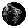

<div class="project">
  <span class="project-path">
    <span class="path">Project</span> /
    <span class="path">Way Finder</span> /
    <span class="path">Board</span>
  </span>

  <div class="project-name-and-actions">
    <span class="title">{{projectTitle}}</span>

    <div class="actions">
      <div class="users">
        <span class="plus-more">+4</span>
        
        
        
      </div>
      <div class="user-add-dots">
        <span class="circle">
          
        </span>
        <span class="circle">
          
        </span>
        <button mat-raised-button color="primary">+ Add</button>
      </div>
    </div>
  </div>

  <nav routerLinkActive="active-link" [routerLinkActiveOptions]="{exact: true}" class="navigation">
    <a routerLinkActive="active-link" routerLink="/system/projects/project/overview" class="links" href="">OverView
    <span class="active-line"></span>
    </a>
    <a routerLinkActive="active-link" routerLink="/system/projects/project" class="links">Boards
    <span class="active-line"></span>
    </a>
    <a routerLinkActive="active-link" routerLink="/system/projects/project/timeline" class="links">Timeline
    <span class="active-line"></span>
    </a>
    <a routerLinkActive="active-link" routerLink="/system/projects/project/file" class="links">Files
    <span class="active-line"></span>
    </a>
  </nav>
  <div class="outlet">
  <router-outlet></router-outlet>
  </div>
</div>
